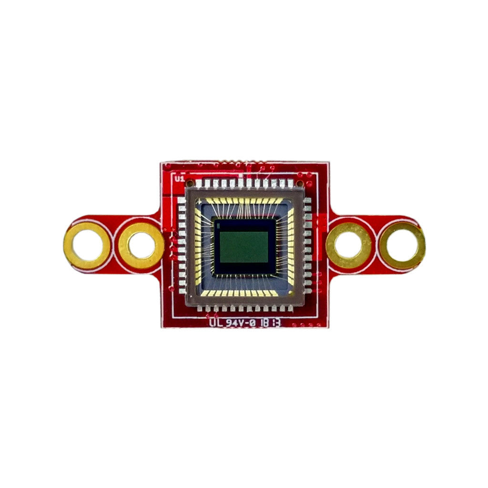

Moduł kamery z migawką globalną¶
Moduł kamery z migawką globalną to monochromatyczny sensor, który przechwytuje szybki ruch bez artefaktów migawki kroczącej. Nadaje się do śledzenia z dużą szybkością, dronów oraz zrzutów obrazu w wizji maszynowej. Moduł dostarczany jest z sensorem MT9V024 lub MT9V034.
{kind=link}

Pełną kartę katalogową, zdjęcia oraz informacje o zamówieniu znajdziesz na stronie produktu modułu kamery z migawką globalną.
Najważniejsze cechy¶
Monochromatyczny sensor z migawką globalną 752x480
80 FPS przy QVGA, 200 FPS przy QQVGA, 400 FPS przy QQQVGA
Zakres dynamiki 55 dB
Kompatybilny ze wszystkimi modułowymi płytkami bazowymi OpenMV Cam
Użycie¶
Strumieniuj wideo w skali szarości w rozdzielczości 320x240 (QVGA):
import csi
import time
csi0 = csi.CSI()
csi0.reset()
csi0.pixformat(csi.GRAYSCALE)
csi0.framesize(csi.QVGA)
clock = time.clock()
while True:
clock.tick()
img = csi0.snapshot()
print(clock.fps())
Sensor automatycznie aktywuje binning pikseli przy niższych rozdzielczościach — 2x przy QVGA (320x240) lub mniejszej, 4x przy QQVGA (160x120) lub mniejszej — co proporcjonalnie skraca czas odczytu i podnosi liczbę klatek. Kamera musi jednak nadal naświetlać przez żądane okno ekspozycji, więc połącz obniżenie framesize z krótszym limitem ekspozycji przez csi.CSI.auto_exposure, aby faktycznie osiągnąć wyższe częstotliwości (obraz będzie ciemniejszy — przewidź dodatkowe oświetlenie):
import csi
import time
csi0 = csi.CSI()
csi0.reset()
csi0.pixformat(csi.GRAYSCALE)
csi0.framesize(csi.QQVGA)
csi0.snapshot(time=2000) # let auto-exposure settle
csi0.auto_exposure(True, exposure_us=5000) # cap exposure
clock = time.clock()
while True:
clock.tick()
img = csi0.snapshot()
print(clock.fps())
Tryb wyzwalany ustawia naświetlanie pikseli dokładnie w linii z każdym wywołaniem csi.CSI.snapshot, więc przechwycenia synchronizują się ze zrzutem obrazu, a nie z wolnobiegnącym zegarem ramki kamery — przydatne do synchronizacji z zewnętrznym zdarzeniem lub innym sensorem. Włącz go przez csi.CSI.ioctl z csi.IOCTL_SET_TRIGGERED_MODE — liczba klatek spada do około połowy trybu wolnobiegnącego, ponieważ odczyt nie potokuje się już z naświetlaniem następnej ramki:
import csi
import time
csi0 = csi.CSI()
csi0.reset()
csi0.pixformat(csi.GRAYSCALE)
csi0.framesize(csi.VGA)
csi0.snapshot(time=2000)
csi0.ioctl(csi.IOCTL_SET_TRIGGERED_MODE, True)
clock = time.clock()
while True:
clock.tick()
img = csi0.snapshot()
print(clock.fps())